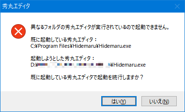
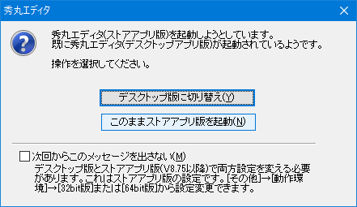
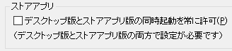

[HME0087A]
●異なるフォルダの秀丸が実行されているので起動できません

- 秀丸エディタに関連付けていたファイルを開こうとしても、「異なるフォルダの秀丸エディタが実行されているので起動できません」というエラーダイアログが出て開くことができません。

-
秀丸エディタは自分自身と違う秀丸エディタが既に実行されているときに、以下のダイアログが出て、後から起動しようとする秀丸エディタが実行されないようになっているのは仕様です。

実際には、問題が発生する直接の原因は、以下のように複数あります。
使っていない秀丸エディタを削除する
覚えていないフォルダに古いバージョンの秀丸エディタが残っていないか念のため検索して、見つかれば削除しましょう。 OSが64bitの場合、32bitと64bit版をインストールする事が可能なので、32bitと64bitの2つのバージョンを入れてしまうと同じ状況になります。ショートカットのリンク先を確認する
特にスタートアップやデスクトップに自分で作成したショートカットが、リンク先が古いフォルダを指している場合があります。その場合は新しいフォルダに作成しなおしてください。自分が手動で関連付けをしていた場合
HMSETUP.EXEでなくWindows自身の機能で関連付けした拡張子は、その後秀丸エディタを違うフォルダにバージョンアップインストールすると、自動的には更新されません。
(HMSETUP.EXEはHMSETUP.EXEで関連付けを行った拡張子だけ管理しているためです) この場合、秀丸エディタから関連付けをやり直してください。関連付けを行う方法に注意
秀丸エディタをバージョンアップインストールするとき、それまでとは違うフォルダにしてインストールすると、「ファイルを開くアプリケーションの選択」（関連付けされていないファイルをダブルクリックしたときに開く）画面の「このファイルを開くアプリケーション」に出てくる Hidemaruに登録されている秀丸エディタのパス名が変更されず、そのため、この画面から関連付けを行うと、旧フォルダのパス名で関連付けされてしまうことがあります。この問題を回避するためにも、秀丸エディタから関連付けを行うように習慣づけることをおすすめします。
明示的に違うフォルダにインストールしていなくても、ファイルのリネームに注意
HIDEMARU.EXEのファイル名を変更する（バックアップ目的や、浮動小数点数版秀丸エディタとの切り替えなどのため）と、レジストリの関連付けの値を、変更したファイル名に合わせてWindowsが自動的に書き換えてしまうことがあるようです。この場合も、秀丸エディタで関連付けをやり直してください。
「秀丸エディタ持ち出しキット」を使用している場合
「秀丸エディタ持ち出しキット」を使用している状態で、パソコン本体に別途インストールされている秀丸エディタを、関連づけで起動させてしまうとこの状態になります。「秀丸エディタ持ち出しキット」を使用している場合は、状況に応じて、秀丸エディタにファイルをドロップして開くなど、使い方に工夫が必要な場合があります。
「秀丸エディタ(ストアアプリ版)」を使用している場合
「秀丸エディタ(デスクトップ版)」と「秀丸エディタ(ストアアプリ版)」を同時に起動させた場合も、以下の問い合わせダイアログが表示されます。
ただし、同時起動を可能にする設定もあります。
「動作環境」の「32bit版/64bit版」に設定があります。この設定をONにしておけば、同時起動は可能になります。
